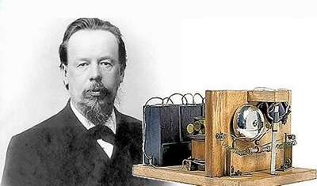
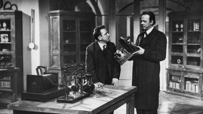
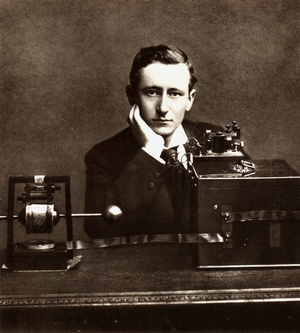
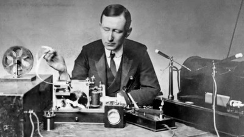

Радио – это средство передачи на расстояние сообщений, новостей, музыки, то, что многие
слушают дома, в
автомобиле или на работе. Невозможно представить нашу жизнь без такого привычного звукового вещания, как
радиопередача. Но мало кто задумывался, как появилось это изобретение, и кто первый придумал радио. В этой
статье расскажу про историю радио и ученых, которые внесли свой вклад в появление устройства, которое
навсегда изменило мир.
Как русские создали радио

Ученые всего мира искали способы передачи сигналов на расстояние. Изобретателями радиоприемника по праву
считают нескольких претендентов, которые работали одновременно, но никак не были связаны между собой. Эти
фамилии многие знают – русский ученый Александр Попов, американец Никола Тесла, итальянский предприниматель
. Гульельмо Маркони.
День рождения радио отмечается в нашей стране 7 мая. В этот день в 1895 году российский физик Александр
Попов осуществил первый в мире сеанс радиосвязи с помощью созданного им радиоприемника. Прошло всего 120 лет
– и мы уже не представляем свою жизнь без радио и его продолжений: телевидения, мобильной связи, Интернета,
то есть видов связи, основанных на передаче физического (электрического или электромагнитного) сигнала.
Попробуем кратко проследить эволюцию технической мысли: от мечты человечества до ее современной реализации.7
мая 1895 года Александр Степанович выступил на заседании Русского физико-химического общества в
Санкт-Петербурге с лекцией «Об отношении металлических порошков к электрическим колебаниям», на которой,
воспроизводя опыты Лоджа c электромагнитными сигналами, продемонстрировал прибор, схожий в общих чертах с
тем, который ранее использовался Лоджем. Попов внес в конструкцию усовершенствования: в его радиоприемнике
молоточек, встряхивавший когерер (трубку Бранли), работал не от часового механизма, а от радиоимпульса.

Устройство Попова отличалось чувствительностью и надежностью. В первых опытах по радиосвязи, проведенных в
физическом кабинете, а затем в саду Минного офицерского класса, приемник обнаруживал излучение
радиосигналов, посылаемых передатчиком, на расстоянии до 60 м.
Как американцы создали радио
В США уверены, что заслуга изобретения радио принадлежит Николе Тесле, запатентовавшему в 1893 году
передатчик, а в 1895-м – приемник. Кстати, в 1943 году его приоритет перед Маркони был признан в судебном
порядке. Это связано с тем, что аппарат Маркони и Попова позволял осуществлять только сигнальную функцию,
используя в том числе азбуку Морзе. А устройство Теслы могло преобразовывать радиосигнал в акустический
звук. Такую конструкцию имеют и все современные радиоустройства, в основе которых лежит колебательный
контур.
Сейчас Тесла воспринимается как «Илон Маск XX века». Он изобрёл электрический счётчик, разработал теорию
полей, спровоцировав постройку Ниагарской ГЭС, изучил влияние тока на человеческий организм, а ещё придумал
фантастический резонатор и, возможно, первый электромобиль.
Серб раньше всех приблизился к созданию приёмника электромагнитных волн. Об этом он заговорил ещё в 1890
году: «Недорогой аппарат позволит владельцу слушать в море или на земле музыку или песни, речь политического
лидера, выдающегося учёного или проповеди священника, находящегося на огромном расстоянии». А в 1893-м Тесла
выступил с докладом «О свете и других высокочастотных явлениях» в Институте Франклина в Филадельфии. Там он
описал приёмник и передатчик, антенну, заземление, контур, катушку индуктивности, конденсатор и даже
репродуктор, придуманный им ещё в Будапеште.
В общем, это было почти готовое радио. Казалось бы — вот оно, открытие, патент и мировая слава. Но Тесла не
погнался за мелкой рыбешкой и не стал акцентировать внимание на изобретении. Беспроводная связь была лишь
частью его фантастического, но, кажется, вполне осуществимого замысла — передавать электроэнергию по всему
миру, не используя провода.
Что слушала Европа?
Слава итальянца Гильермо Маркони вызывает больше вопросов, нежели биографии остальных участников этой
запутанной истории. При этом нельзя отрицать, что его имя тоже вписано в хроники развития радио. Ведь именно
Маркони в 1896 году первым получил патент на гаджет, способный передавать и принимать радиоволны. Его прибор
был очень похож на изобретение как Попова, так и Теслы, а назывался «Усовершенствования в передаче
электрических импульсов и сигналов в передающем аппарате».

Обратите внимание на первое слово — Маркони действительно улучшил чужие изобретения, добавив несколько
катушек и металлические пластины. Правда, в своей заявке на патент он намеревался использовать прибор для
приёма сигналов не только по воздуху, но и через землю и воду, что несколько противоречит законам физики.

Остальная слава итальянца обусловлена тем, что он толково продвигал свои радиоприборы — например, провёл
первый радиорепортаж. Когда началась очередная парусная регата, он оснастил радиоаппаратурой яхту принца
Уэльского. Тот незадолго до заплыва повредил ногу, и в Британии очень волновались, как же сын королевы
Виктории справится с гонками. Приёмник Маркони бесперебойно поставлял сводки о здоровье аристократа — эти
новости радостно подхватывала пресса. Вскоре всё королевство узнало не только о погоде на море, но и об
изобретениях итальянца.
Приёмники Маркони начали расходиться по судам и домам. Да, это больше заслуга рекламы,
но повсеместное
распространение радио спасло сотни жизней. Например, экипаж «Титаника» подал сигнал SOS именно по аппарату,
установленному «Международной компанией морской связи Маркони». Если бы не это устройство — неизвестно,
сколько людей удалось бы спасти.